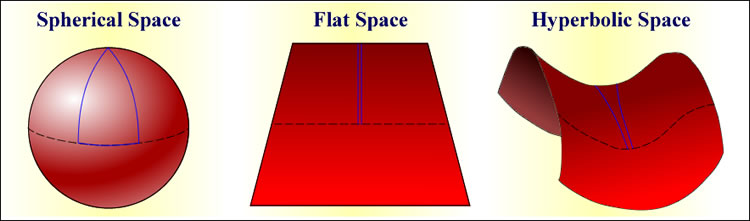
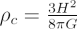

The ‘critical density’ is the average density of matter required for the Universe to just halt its expansion, but only after an infinite time. A Universe with the critical density is said to be flat.
In his theory of general relativity, Einstein demonstrated that the gravitational effect of matter is to curve the surrounding space. In a Universe full of matter, both its overall geometry and its fate are controlled by the density of the matter within it.
- If the density of matter in the Universe is high (a closed Universe), self-gravity slows the expansion until it halts, and ultimately re-collapses. In a closed Universe, locally parallel light rays converge at some extremely distant point. This is referred to as spherical geometry.
- If the density of matter in the Universe is low (an open Universe), self-gravity is insufficient to stop the expansion, and the Universe continues to expand forever (albeit at an ever decreasing rate). In an open Universe, locally parallel light rays ultimately diverge. This is referred to as hyperbolic geometry.
- Balanced on a knife edge between Universes with high and low densities of matter, there exists a Universe where parallel light rays remain parallel. This is referred to as a flat geometry, and the density is called the ‘critical density’. In a critical density Universe, the expansion is halted only after an infinite time.

The critical density for the Universe is approximately 10-26 kg/m3 (or 10 hydrogen atoms per cubic metre) and is given by:

where H is the Hubble constant and G is Newton’s gravitational constant.
Attempts to measure the actual density of the Universe have basically followed one of two methods:
- The accounting approach in which one attempts to estimate the mass of a given (large) volume of the Universe by measuring the masses of objects within the volume. Masses may be estimated directly (e.g. by the measurement of kinematic properties such as galaxy motions within clusters) or indirectly by assuming a relation between the luminosities and masses of individual galaxies within the volume. This indirect method suffers from our lack of knowledge of the fraction of dark matter present in and around galaxies. However, the technique can still be used, with an appropriate assumption about the luminous to dark matter ratio, to estimate the total mass in the volume.
- The geometrical approach which makes use of the idea of the converging/diverging parallel lines. For example, if the Universe is closed and the parallel lines converge, the observed density of distant galaxies should be less than that expected by extrapolating the local density of galaxies backwards in time. On the other hand, in a open Universe, the diverging parallel lines would cause the observed density of distant galaxies to be greater than expected.
To date, both of these techniques return values for the density of the Universe entirely consistent with the critical density. Somewhat surprisingly, this suggests that we are actually balanced on the knife edge and live in a flat Universe.
See also:density parameter.